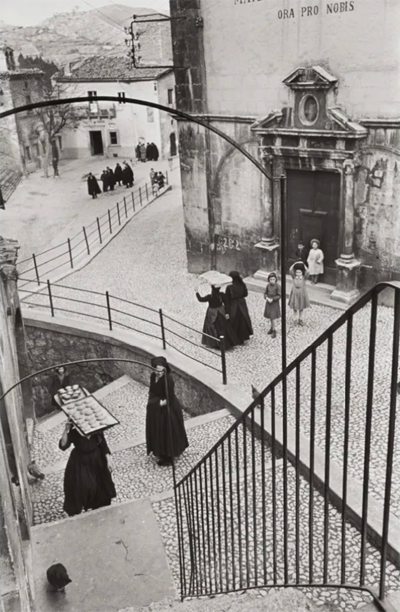
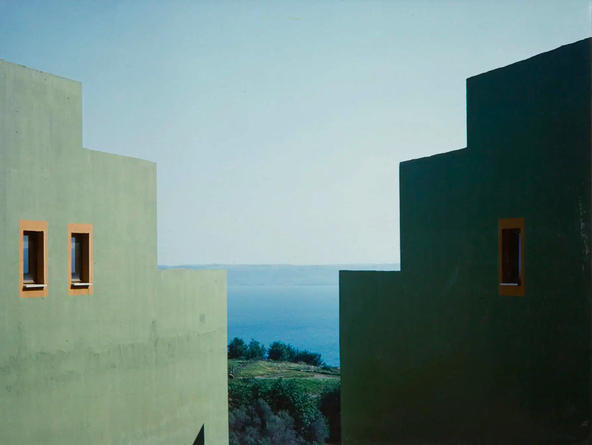
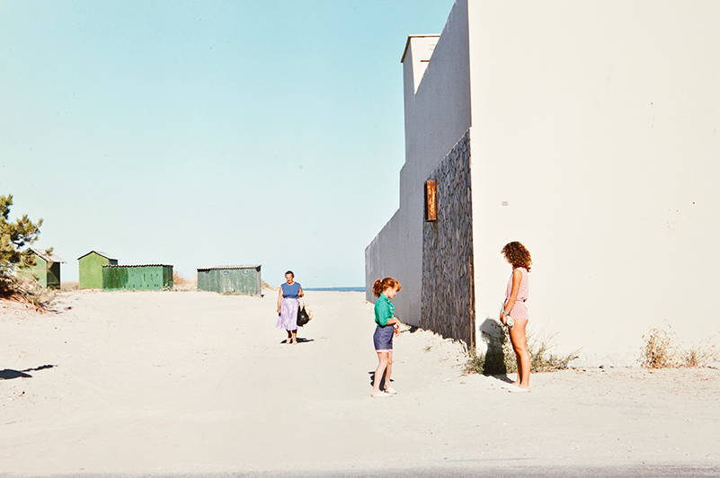
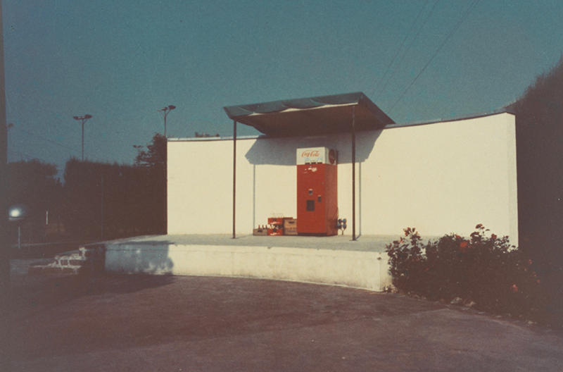
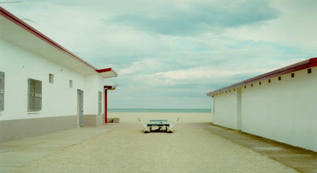
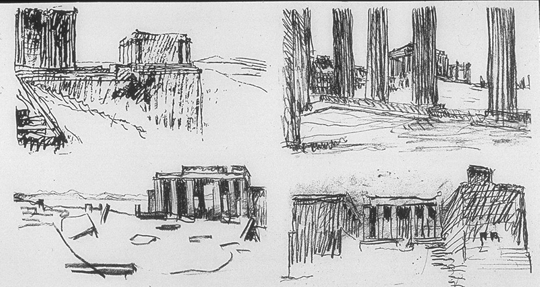
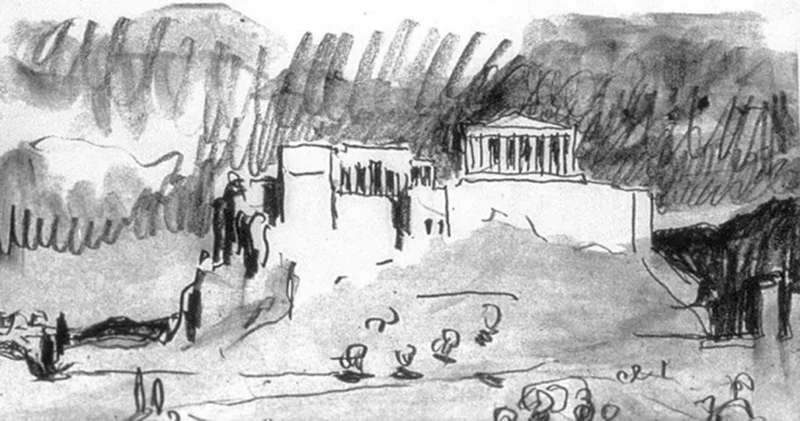
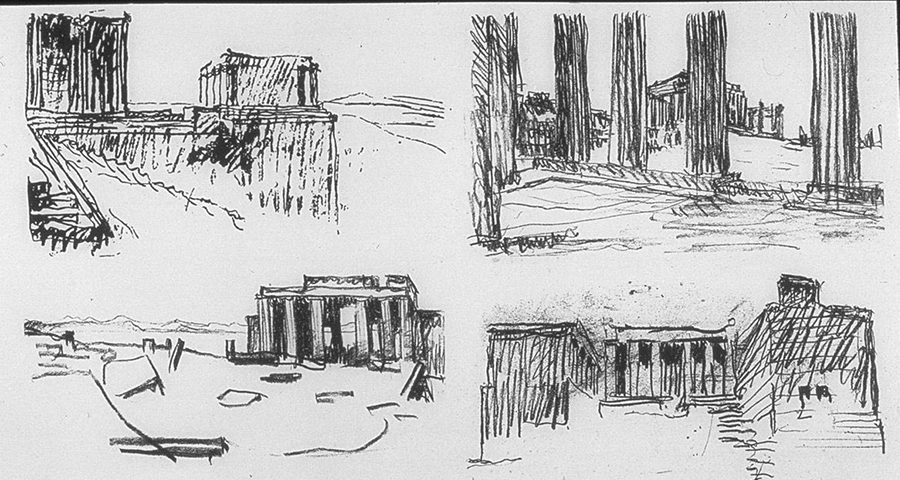
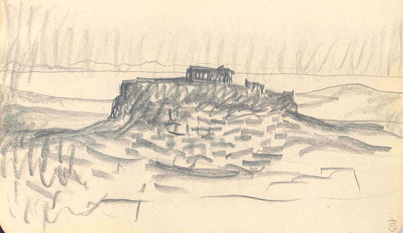
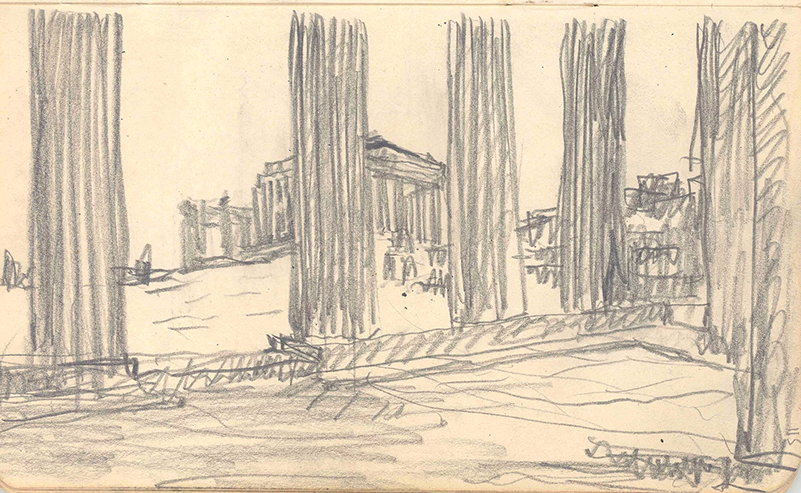

La tecnica viene dopo. Il primo strumento dell’architetto è lo sguardo. Questa scheda invita a considerare lo spazio come fenomeno percettivo: fatto di assi, profondità, soglie, proporzioni. Le immagini selezionate non mostrano “oggetti”, ma modalità di vedere: come l’architetto seleziona e organizza la realtà, già prima di tracciarne una linea.
A.

Henri Cartier-Bresson si recò a L’Aquila, in Abruzzo, Italia, nel 1951 e realizzò una serie di fotografie significative che documentavano la vita e le tradizioni locali. Il suo lavoro in questa regione è noto per aver catturato l'essenza di un'Italia del dopoguerra in transizione, prima del picco dell'influenza industriale.
Durante il suo viaggio in Italia nel 1951, Cartier-Bresson fu incaricato di documentare varie regioni, con particolare attenzione al Sud e alla vita rurale. In Abruzzo visitò sia la città di L'Aquila che il vicino villaggio di Scanno, realizzando alcune delle sue immagini più famose e iconiche.
Gli aspetti chiave del suo lavoro in questa regione includono:
B.




Le fotografie di Luigi Ghirri intitolata "Modena, 1973" fanno parte della celebre serie e del libro fotografico Kodachrome. L'opera è conservata presso l'Archivio Luigi Ghirri.Il libro raccoglie 92 fotografie a colori scattate tra il 1970 e il 1978. Ghirri utilizzò il suo archivio come un "serbatoio di immagini", creando una sequenza che, pur apparendo disgiunta, costituisce una riflessione profonda sull'atto di guardare e sulla rappresentazione della realtà. La foto, come gran parte del lavoro di Ghirri, si concentra sul paesaggio e sulla percezione del quotidiano, trasformando scene ordinarie, a volte banali, in poesia visiva.
Kodachrome è considerata un'opera fondamentale nella storia della fotografia italiana, segnando l'abbandono delle pose documentaristiche tradizionali in favore di un approccio più concettuale e poetico.
C.





I taccuini di schizzi del “Viaggio in Oriente” di Le Corbusier, compresi i suoi disegni dell'Eretteo e di altri edifici dell'Acropoli, sono conservati dalla Fondazione Le Corbusier a Parigi.